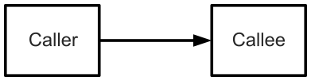
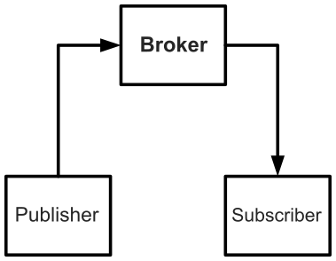
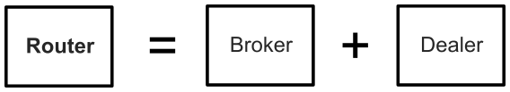
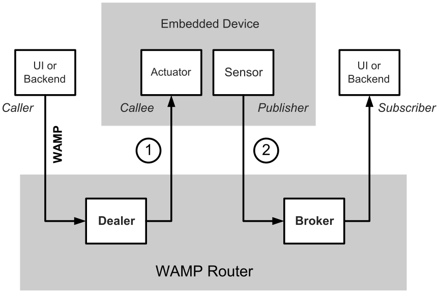

Message Routing in WAMP¶
WAMP provides Unified Application Routing in an open WebSocket protocol that works with different languages.
Using WAMP you can build distributed systems out of application components which are loosely coupled and communicate in (soft) real-time.
At its core, WAMP offers two communication patterns for application components to talk to each other:
Publish & Subscribe (PubSub)
Remote Procedure Calls (RPC)
We think applications often have a natural need for both forms of communication and shouldn’t be required to use different protocols/means for those. Which is why WAMP provides both.
WAMP is easy to use, simple to implement and based on modern Web standards: WebSocket, JSON and URIs.
While WAMP isn’t exactly rocket science, we believe it’s good engineering and a major step forward in practice that allows developers to create more powerful applications with less complexity and in less time.
Loosely coupled¶
WAMP provides what we call unified Application Routing for application communication:
routing of events in the Publish & Subscriber pattern and
routing of calls in the Remote Procedure Call pattern
between applications components in one protocol.
Unified routing is probably best explained by contrasting it with legacy approaches.
Lets take the old “client-server” world. In the client-server model, a remote procedure call goes directly from the Caller to the Callee:
{kind=link}

Remote procedure calls in the Client-Server model¶
In the client-server model, a Caller needs to have knowledge about where the Callee resides and how to reach it. This introduces a strong coupling between Caller and Callee. Which is bad, because applications can quickly become complex and unmaintainable. We explain how WAMP fixes that in a minute.
The problems coming from strong coupling between application components were long recognized and this (besides other requirements) lead to the publish-subscribe model.
In the publish-subscribe model a Publisher submits information to an abstract “topic”, and Subscribers only receive information indirectly by announcing their interest on a respective “topic”. Both do not know about each other. They are decoupled via the “topic” and via an intermediary usually called Broker:
{kind=link}

A Broker decouples Publishers and Subscribers¶
A Broker keeps a book of subscriptions: who is currently subscribed on which topic. When a Publisher publishes some information (“event”) to a topic, the Broker will look up who is currently subscribed on that topic: determine the set of Subscribers on the topic published to. And then forward the information (“event”) to all those Subscribers.
The act of determining receivers of information (independently of the information submitted) and forwarding the information to receivers is called routing.
Now, WAMP translates the benefits of loose coupling to RPC. Different from the client-server model, WAMP also decouples Callers and Callees by introducing an intermediary - the Dealer:
{kind=link}
Remote procedure calls in the Dealer model¶
Similar to a Broker’s role with PubSub, the Dealer is responsible for routing a call originating from the Caller to the Callee and route back results or errors vice-versa. Both do not know about each other: where the peer resides and how to reach it. This knowledge is encapsulated in the Dealer
With WAMP, a Callee registers a procedure at a Dealer under an abstract name: a URI identifying the procedure. When a Caller wants to call a remote procedure, it talks to the Dealer and only provides the URI of the procedure to be called plus any call arguments. The Dealer will look up the procedure to be invoked in his book of registered procedures. The information from the book includes where the Callee implementing the procedure resides, and how to reach it.
In effect, Callers and Callees are decoupled, and applications can use RPC and still benefit from loose coupling.
Component based¶
Brokers, Dealers and Routers
What if you combine a Broker (for Publish & Subscribe) and a Dealer (for routed Remote Procedure Calls)?
When you combine a Broker and a Dealer you get what WAMP calls a Router:
{kind=link}

A Router combines a Broker and a Dealer¶
A Router is capable of routing both calls and events, and hence can support flexible, decoupled architectures that use both RPC and PubSub. We think this is new. And a good thing.
Here is an example. Imagine you have a small embedded device like an Arduino Yun with sensors (like a temperature sensor) and actuators (like a light or motor) connected. And you want to integrate the device into an overall system with user facing frontend to control the actuators, and continuously process sensor values in a backend component.
Using WAMP, you can have a browser-based UI, the embedded device and your backend talk to each other in real-time:
{kind=link}

WAMP in an IoT application¶
Switching on a light on the device from the browser-based UI is naturally done by calling a remote procedure on the device (1). And the sensor values generated by the device continuously are naturally transmitted to the backend component (and possibly others) via publish & subscribe (2).
Note
“Moving onto the part of Internet of Things, we integrated a sensor (light sensor) and an actuator (light switch/dimmer) into a web application. The major feature of the sensor (sending data) and that of the actuator (commanding and configuration) perfectly match the messaging patterns, Pub/Sub and RPC, which WAMP provides.”
From Web Technologies for the Internet of Things, Master thesis, July 2013, Huang F.
So here you have it: one protocol fulfilling “all” application communication needs.
Real-time¶
WebSocket is a new Web protocol that overcomes limitations of HTTP when bidirectional, real-time communication is required.
WebSocket is specified as an IETF standard and built into modern browsers.
When designing WAMP, we recognized early on that WebSocket would be the ideal basis for WAMP as it provides bidirectional real-time messaging that is compatible with the Web and browsers. Not only that - we can run WebSocket with non-browser environments as well.
However, as such, WebSocket it is quite low-level and only provides raw messaging. This is where WAMP enters. WAMP adds the higher level messaging patterns of RPC and PubSub to WebSocket.
Technically, WAMP is an officially registered WebSocket subprotocol (runs on top of WebSocket) that uses JSON as message serialization format.
While WAMP-over-WebSocket with JSON serialization is the preferred transport for WAMP, the protocol can also run with MsgPack as serialization, run over raw-TCP or generally any message based, bidirectional, reliable transport.
Hence: WAMP runs on the Web and anywhere else.
Language independent¶
WAMP was designed with first-class support for different languages in mind (*). Nothing in WAMP is specific to a single programming language. As soon as a programming language has a WAMP implementation, it can talk to application components written in any other language with WAMP support. Transparently.
Note
WAMP has facilities for first-class support of many common and less common language features. E.g. WAMP can transmit both positional and keyword based call arguments, so that languages which natively support keyword arguments in functions (e.g. Python) can be naturally mapped. WAMP even supports multi-positional and keywords based return values for calls. E.g. the PostgreSQL pgPL/SQL or Oracle PL/SQL languages support this. Means that most PL/SQL functions can be naturally exposed via WAMP.
The ability to create a system from application components written in different languages is a big advantage. You can write your frontend in JavaScript to run in the browser, but still write backend components in Python or Java. If you recognize a performance bottleneck in a component, you can rewrite that component in a faster language - without changing a single line of code in other components.
All developers in your team can become productive, since they are not tied to a “least common denominator”, but can write components in the language they prefer, or which is ideal for the specific components at hand. Need some fancy numerical code which is only available in C++ and needs to run with maximum performance? No problem. Have the functionality isolated in an application component written in C++, and integrate this with components written in your “standard” language.
What this means is: plug-and-play your app components - no matter what language.
Network spanning¶
Write me.